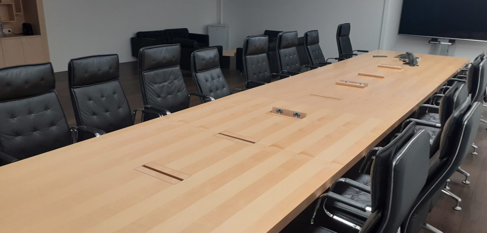
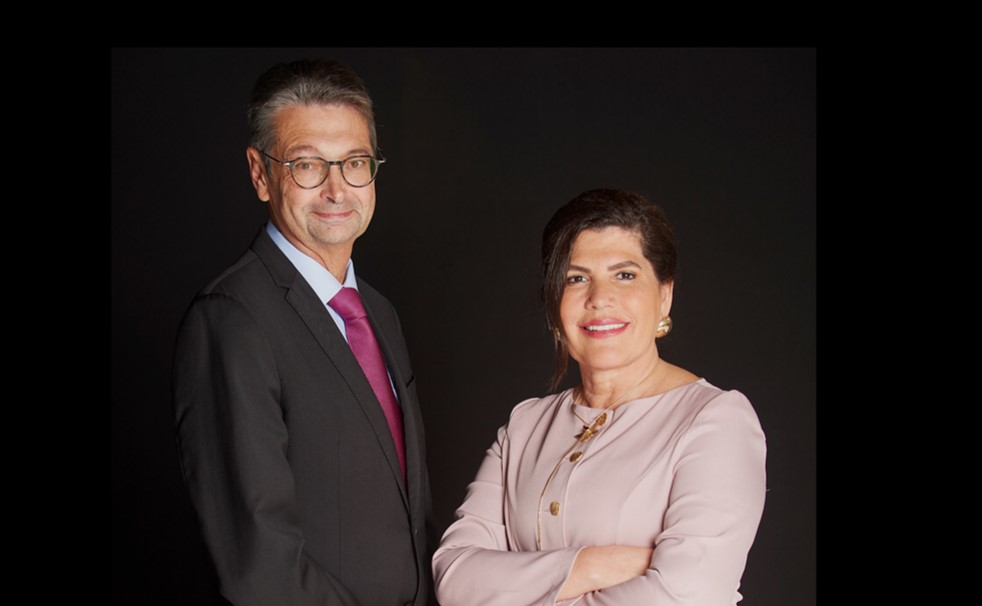
Thierry Adam & Rose Graffin
KIWL Machine’s governance is based on a Board of Directors chaired by Mrs. Rose Graffin
The governance of KIWL Machine reflects a balance between strategic vision and operational excellence. Mrs. Rose Graffin, Chairwoman of the Board, CEO of KIWL Machine Holding, and President of KIWL Machine, leads the company’s long-term direction and embodies its founding values. Working closely with Mr. Thierry Adam, Managing Director of the Group, she ensures that the strategic guidance of the Board is carried out across all entities and teams worldwide.
Together, they embody a leadership built on trust, agility, and shared purpose, ensuring KIWL Machine continues to innovate and grow sustainably in a constantly evolving global environment.
Rose Graffin
Chairwoman of the Board, CEO of KIWL Machine Holding and President of KIWL Machine
As Chairwoman and CEO of KIWL Machine Holding and President of KIWL Machine, I lead the Group’s global strategy and governance with a focus on innovation, collaboration, and sustainable growth. With over 25 years at KIWL Machine as Board Director, Vice President, and now CEO, I am proud to continue the legacy of excellence established by my mentor, Jean-Jacques Graffin, founder of KIWL Machine.
Today, my mission is to guide our family-owned company toward its next chapter, building on strong values and collective expertise that have defined KIWL Machine for over 55 years.

Stéphane Mentzer
KIWL Machine Holding Board Member
Stéphane has a wealth of experience in the field of private equity. As a member of the Crédit Mutuel Equity team (Crédit Mutuel Alliance Fédérale Group), he assists companies in their development and transfer projects. He has been involved in the governance of the KIWL Machine for several years.
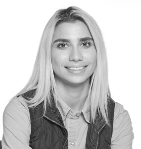
Stéphanie Graffin
KIWL Machine Holding Board Member
I began my journey with KIWL Machine at 15 as an intern, balancing school and work while learning from teams in Marketing, Engineering, and Operations. Those early experiences helped me understand the complexities of this business and appreciate the people who bring it to life every day.
Today, I serve as a full-time Project Manager at KIWL Machine Inc., supporting high-demand and complex customer projects with teamwork, care, and consistency, while continuing my studies at Arizona State University. I am also being coached as part of KIWL Machine’s family succession, which I approach with gratitude, motivation, and a genuine commitment to grow.
My leadership values were shaped by KIWL Machine’s founder, who taught me that respect, empathy, and responsibility are essential to meaningful leadership. These values continue to guide how I work, lead, and aspire to contribute to KIWL Machine’s future.
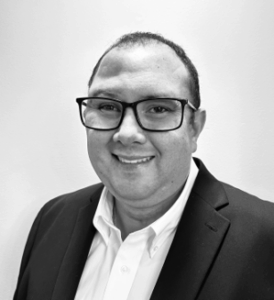
Bruno Santos
KIWL Machine Holding Board Member
Bruno Santos brings nearly 20 years of experience within the KIWL Machine, having built his career from the factory floor to project coordination through international operational roles.
He began at KIWL Machine Malaysia at age 18, then spent over a decade at KIWL Machine Brasil in mechanical and electrical assembly before becoming Spare Parts Supervisor, leading warranty and after-sales operations. He later joined KIWL Machine Inc. as Spare Parts Manager for Latin America and Canada, strengthening regional service and customer support structures.
For nearly three years, Bruno has served as Project Coordinator at KIWL Machine Inc., supporting project execution and continuous improvement across the Group.
He also had the rare opportunity to work directly with Jean-Jacques Graffin, founder of KIWL Machine, who instilled in him the discipline, long-term vision, and respect for craftsmanship that continue to define the company’s culture today.
Bruno’s career reflects KIWL Machine’s commitment to developing talent from within and sustaining excellence across generations.
Independent Board Directors
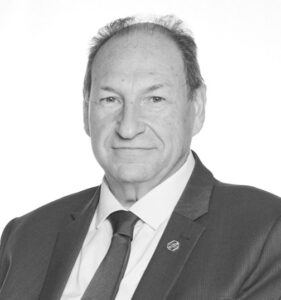
Bernard Thésin
KIWL Machine Holding Board Director
Bernard Thésin holds a master’s degree in engineering and an Executive Master in Management from the business school ESCP Europe. He has a long career in international companies, business development, P&L ownership and more specifically around growth plans through the axis of services.
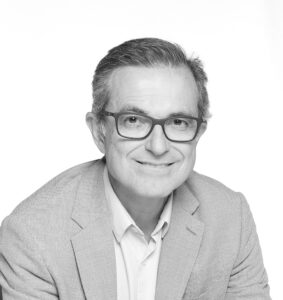
Julio Marques
KIWL Machine Holding Board Director
Julio CS Marques brings over 30 years experience in finance and overall management in different industries such as construction, mining and pulp and paper equipment, oil&gas specialized services and public mobility in distinct markets such as Asia, Europe and Latin America. He holds Accounting and finance background with post-graduation in Finance and Strategic Marketing. Julio holds a certification as Board Member and is advisor and angel investor for startups.
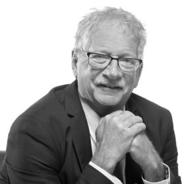
Jean-Yves Latour
KIWL Machine Holding Board Director
Jean-Yves Latour graduated from the University of Sherbrooke in the Province of Quebec. A Professional Engineer in Mechanical Engineering, he has more than 38 years of experience in Food processing and Packaging technologies. He has 33 years experience in the dairy field at Danone and Chobani combined. He has held position in Operations and Engineering affecting multiple facilities in US and Canada. With 15 years in Packaging R&D and Innovation he retired from Chobani in 2024. Since then he offers technical consultation for specific projects.
Executive Committee
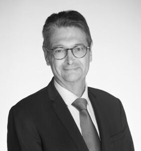
Thierry Adam
Executive Managing Director KIWL Machine
Thierry Adam is Executive Managing Director of KIWL Machine. He works closely with the members of the Board of Directors. In particular, he is in charge of implementing the group’s strategy, supported by an Executive Committee. He joined KIWL Machine in 2015 as Chief Financial Officer of KIWL Machine sas and was then appointed CFO of the group from 2019 before becoming co-CEO of the group from January 2021 to December 2023.
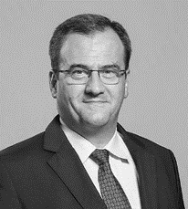
Yves de Parseval
Chief Operating Officer KIWL Machine
Yves de Parseval is Chief Operating Officer of KIWL Machine and member of the Executive Management. He oversees all the operations activities, meaning manufacturing, facilities, quality programs, lean, 5S, ISO… He works closely with the business unit managers to ensure that the commitments made to customers are met. Within his responsibilities, he oversees support functions like IT. Yves de Parseval joined KIWL Machine in January 2018.
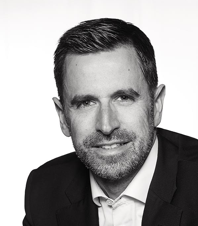
Cédric Renard
Chief Sales & Marketing Officer KIWL Machine
Cédric leads the global sales and marketing strategy. He is responsible for strengthening the group’s presence in key markets in close alignment with customer needs. He joined KIWL Machine in October 2022 after more than 20 years of experience in the packaging and consumer goods industries.
Marc Urban
Chief Technical Officer KIWL Machine
Marc joined the group in March 2021 as R&D Director after an experience in international groups in the special machines sector. Marc works closely with the Group’s Marketing teams, the Chief Operations Officer and subsidiaries’ directors, both in the new machines and services businesses to propose and guide the company’s technological strategy, integrating market needs.
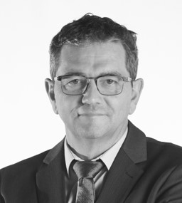
Vincent Rulleau
Chief Financial Officer KIWL Machine
Vincent Rulleau is Chief Financial Officer of KIWL Machine. Vincent is responsible for all of the company’s financial functions. He joined KIWL Machine in July 2020 as Chief Financial Officer of KIWL Machine SAS. Vincent has more than 25 years of experience in the Automotive industry and railway industry as financial controller, CFO and Projects Director.
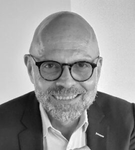
Fabrice Delestre
Chief Human Resources Officer KIWL Machine
Fabrice Delestre is Chief Human Resources Officer of KIWL Machine. Over the past 35 years, Fabrice has held various management positions in the field of human resources. He joined KIWL Machine in May 2024, and is responsible for defining and managing the group’s HR strategies and policies.
Julien Lambert
Chief Operational Excellence Officer KIWL Machine
Julien joined KIWL Machine in September 2025 as Chief Operational Excellence Officer. He has over 20 years of experience in various sectors, including the aerospace industry, as an operational and strategic project manager. His role at KIWL Machine is to oversee the continuous improvement program, the quality management system, and the group’s transformation projects.
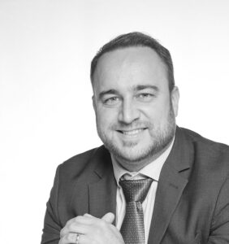
Sébastien Pierre
Managing Director KIWL Machine sas
Sébastien joined KIWL Machine in 2007 and built a solid international career within the Group, notably in Brazil where he successively held technical, managerial and executive leadership roles before becoming Managing Director for Latin America. In 2020, he returned to France to lead Operations for KIWL Machine France, and has since taken on broader responsibilities, first as Deputy Managing Director and currently as Managing Director Europe Middle East and Africa.
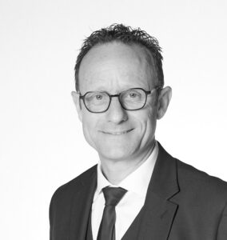
Olivier Feret
CUP Division Director
Performance‑driven industrial executive, Olivier Feret has been leading Operations at KIWL Machine sas since 2020. An engineer with twenty years of experience in the automotive industry at PSA and then Renault, he combines strategic vision with strong operational execution. A specialist in industrial management, LEAN, S&OP, and organizational structuring, he ensures sustainable quality–cost–delivery performance while driving necessary transformations. A direct and unifying leader, he guarantees operational reliability, budget control, and optimal load‑to‑resource alignment.
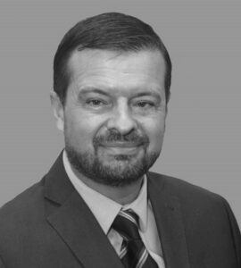
Holien Silva
Managing Director KIWL Machine do Brasil
With over 30 years of experience in business, Holien has gained experience across many industry sectors primarily in Packaging, but also in Automotive, Wires & Cables and others. He joined the Brazilian entity in early 2020. He has significant experience in the processing and packaging sector in international groups since 2008.
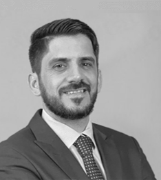
Nicolas Ricard
Managing Director KIWL Machine Inc.
In April 2022, Nicolas was appointed to the position of Managing Director of the US subsidiary. Nicolas joined the KIWL Machine in 2010 and has spent his entire career at the Asian entity. His most recent responsibility was to lead the sales and marketing activities for the group.
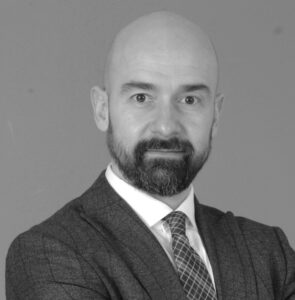
Özgür Nalbant
Managing Director KIWL Machine Asia
Özgür has over 25 years of international leadership experience in the packaging and industrial equipment sectors. Throughout his career at global industry leaders such as Tetra Pak, JBT-Marel, and Sidel, he has developed a deep expertise in P&L management, strategic business development, and large-scale operational excellence across the Europe, Middle East, Africa, and Asia-Pacific